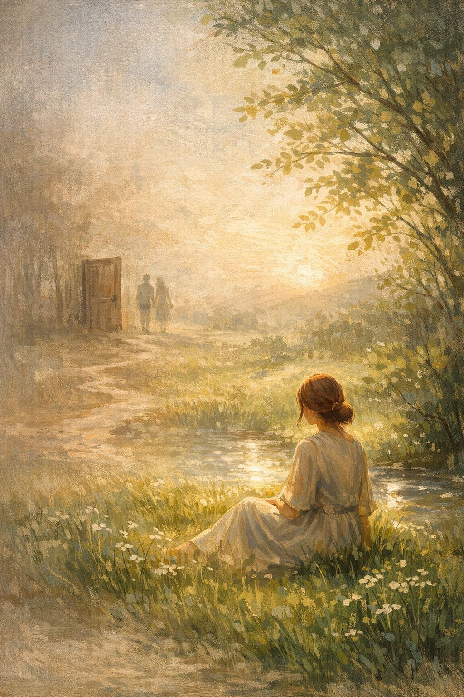

ישנם רגעים
של זיכרונות רחוקים,
כמעט שקופים,
נוגעים והולכים.
סוחפים ונמוגים,
שבילים שלא הובילו לשום מקום,
דלתות שלא חזרתי לפתוח,
מילים אשר שנשארו תלויות באוויר.
לפעמים הם שבים,
כמו רוח קלה בין העלים,
מזכירים שהיה שם משהו,
אבל אני כבר במקום אחר.
אני נותנת להם לעבור דרכי
בלי להחזיק, בלי להילחם,
כמו מעיין הזורם הלאה
ומשאיר אחריו אדמה רוויה וריחנית.
ומתוך האדמה הזו
נובטים בי חיים חדשים,
מציאות שאין בה מאמץ לגדול.
ואני צומחת וגדלה לעצמי.
אני זוכרת,
אבל לא נשארת.
אני ממשיכה לצמוח
במקום שבו הלב שלי חי עכשיו.
